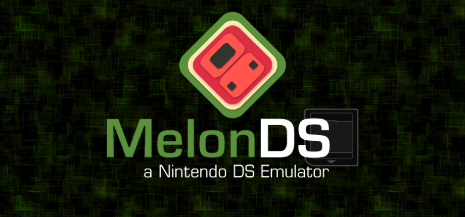
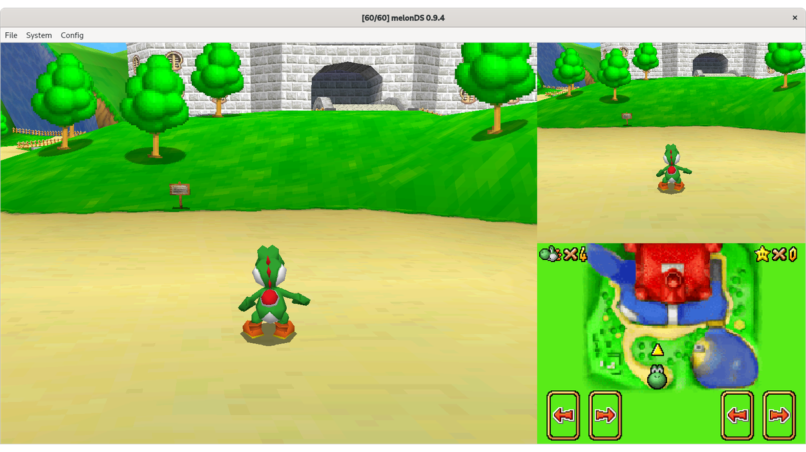
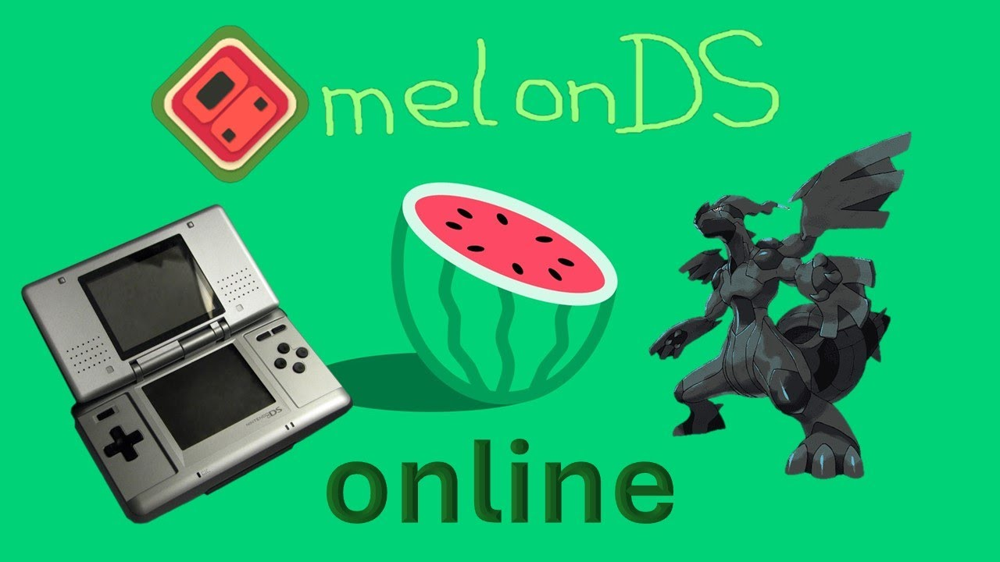

Emulatore: MelonDS

Tra tutti gli emulatori DS che ho provato, MelonDS è quello che mi ha convinto di più. Si distingue per una stabilità eccellente anche con i titoli più pesanti, un audio preciso e fedele senza distorsioni o ritardi e un'emulazione del doppio schermo impeccabile, fondamentale per i giochi DS.
In poche parole, MelonDS offre la sensazione più vicina possibile a giocare su un vero Nintendo DS, ma con tutti i vantaggi del PC.

Da adattare a come voglio costruire la pagina web. I software di emulazione come MelonDS aprono le porte al retrogaming portatile su dispositivi moderni, catturando l'attenzione degli appassionati più nostalgici. Il funzionamento tecnico riproduce fedelmente l'interfaccia a doppio schermo del Nintendo DS, lasciando al giocatore il compito di mappare i comandi touch sulla superficie dello smartphone o su un controller esterno.
Il limite più evidente risiede nell'ottimizzazione generale, che non sempre garantisce stabilità con tutti i titoli. Se l'emulatore fa fatica a digerire una determinata ROM o un particolare effetto poligonale, il gameplay inizierà a scattare o a bloccarsi del tutto, col rischio di corrompere i salvataggi. Anche smanettando nei menu interni, capita di scontrarsi con cali improvvisi di frame rate.
La feature che differenzia nettamente MelonDS dall'hardware originale è la presenza dei Save States e dei trucchi integrati. C'è la possibilità di salvare lo stato esatto del gioco in qualsiasi istante — anche a metà di una boss fight — consentendo di ricaricare immediatamente la partita se qualcosa va storto. A questo si aggiunge la funzione per accelerare la velocità di gioco fino a 4x, ottima per superare i dialoghi più logoranti o le fasi di farming.
